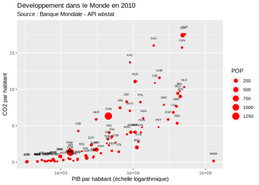

Chapitre 2 L’API Wbstats (Banque Mondiale)
## Global options
library(knitr)
library(dplyr)
library(ggplot2)
opts_chunk$set(echo=TRUE,
cache=TRUE,
prompt=FALSE,
tidy=FALSE,
comment=NA,
message=FALSE,
warning=FALSE)2.1 Objectifs
Supposons que l’on souhaite télécharger la population, le PIB et les émisssions de CO2 des pays du monde de 2000 à 2015. Plutôt que d’aller chercher des fichiers sur un site web, nous allons utiliser une API proposée par la Banque Mondiale qui permet de télécharger les données facilement et surtout de les mettre à jour régulièrement. Pour cela on va installer le package R correspondant à l’API wbstats de la Banque mondiale.
https://cran.r-project.org/web/packages/wbstats/vignettes/Using_the_wbstats_package.html
Au moment du chargement du package, il est créé un fichier wb_cachelist qui fournit l’ensemble des donnes disponibles sous la forme d’une liste de tableaux de méta-données.
library("wbstats")
cat<-wb_cachelist
str(cat,max.level = 1)List of 8
$ countries : tibble [304 × 18] (S3: tbl_df/tbl/data.frame)
$ indicators : tibble [16,649 × 8] (S3: tbl_df/tbl/data.frame)
$ sources : tibble [63 × 9] (S3: tbl_df/tbl/data.frame)
$ topics : tibble [21 × 3] (S3: tbl_df/tbl/data.frame)
$ regions : tibble [48 × 4] (S3: tbl_df/tbl/data.frame)
$ income_levels: tibble [7 × 3] (S3: tbl_df/tbl/data.frame)
$ lending_types: tibble [4 × 3] (S3: tbl_df/tbl/data.frame)
$ languages : tibble [23 × 3] (S3: tbl_df/tbl/data.frame)2.2 Le tableau “countries”
Il fournit des renseignements de base sur les différents pays, leurs codes, etc.
str(cat$countries)tibble [304 × 18] (S3: tbl_df/tbl/data.frame)
$ iso3c : chr [1:304] "ABW" "AFG" "AFR" "AGO" ...
$ iso2c : chr [1:304] "AW" "AF" "A9" "AO" ...
$ country : chr [1:304] "Aruba" "Afghanistan" "Africa" "Angola" ...
$ capital_city : chr [1:304] "Oranjestad" "Kabul" NA "Luanda" ...
$ longitude : num [1:304] -70 69.2 NA 13.2 19.8 ...
$ latitude : num [1:304] 12.52 34.52 NA -8.81 41.33 ...
$ region_iso3c : chr [1:304] "LCN" "SAS" NA "SSF" ...
$ region_iso2c : chr [1:304] "ZJ" "8S" NA "ZG" ...
$ region : chr [1:304] "Latin America & Caribbean" "South Asia" "Aggregates" "Sub-Saharan Africa" ...
$ admin_region_iso3c: chr [1:304] NA "SAS" NA "SSA" ...
$ admin_region_iso2c: chr [1:304] NA "8S" NA "ZF" ...
$ admin_region : chr [1:304] NA "South Asia" NA "Sub-Saharan Africa (excluding high income)" ...
$ income_level_iso3c: chr [1:304] "HIC" "LIC" NA "LMC" ...
$ income_level_iso2c: chr [1:304] "XD" "XM" NA "XN" ...
$ income_level : chr [1:304] "High income" "Low income" "Aggregates" "Lower middle income" ...
$ lending_type_iso3c: chr [1:304] "LNX" "IDX" NA "IBD" ...
$ lending_type_iso2c: chr [1:304] "XX" "XI" NA "XF" ...
$ lending_type : chr [1:304] "Not classified" "IDA" "Aggregates" "IBRD" ...Le tableau comporte 304 observation et il mélange des pays (France), des fragments de pays (Réunion) et des agrégats de pays (Europe). Il faudra donc bien faire attention lors de l’extraction à réfléchir à ce que l’on souhaite utiliser. Par exemple, si l’on veut juste les pays :
## Programme en langage R_base
# pays<-cat$countries[cat$countries$income_level!="Aggregates",c("iso3c", "country","capital_city","longitude","latitude", "region","income_level")]
## Programme en langage dplyr
pays <- cat$countries %>%
filter(income_level !="Aggregates") %>%
select(iso3c,country, capital_city, latitude, longitude, region, income_level)
kable(head(pays))| iso3c | country | capital_city | latitude | longitude | region | income_level |
|---|---|---|---|---|---|---|
| ABW | Aruba | Oranjestad | 12.51670 | -70.0167 | Latin America & Caribbean | High income |
| AFG | Afghanistan | Kabul | 34.52280 | 69.1761 | South Asia | Low income |
| AGO | Angola | Luanda | -8.81155 | 13.2420 | Sub-Saharan Africa | Lower middle income |
| ALB | Albania | Tirane | 41.33170 | 19.8172 | Europe & Central Asia | Upper middle income |
| AND | Andorra | Andorra la Vella | 42.50750 | 1.5218 | Europe & Central Asia | High income |
| ARE | United Arab Emirates | Abu Dhabi | 24.47640 | 54.3705 | Middle East & North Africa | High income |
2.3 Le tableau indicators
Il comporte pas loin de 17000 variables … Autant dire qu’il est difficile de l’explorer facilement si l’on ne sait pas ce que l’on cherche.
indic<-cat$indicators
dim(indic)[1] 16649 8kable(head(indic))| indicator_id | indicator | unit | indicator_desc | source_org | topics | source_id | source |
|---|---|---|---|---|---|---|---|
| 1.0.HCount.1.90usd | Poverty Headcount ($1.90 a day) | NA | The poverty headcount index measures the proportion of the population with daily per capita income (in 2011 PPP) below the poverty line. | LAC Equity Lab tabulations of SEDLAC (CEDLAS and the World Bank). | 11 , Poverty | 37 | LAC Equity Lab |
| 1.0.HCount.2.5usd | Poverty Headcount ($2.50 a day) | NA | The poverty headcount index measures the proportion of the population with daily per capita income (in 2005 PPP) below the poverty line. | LAC Equity Lab tabulations of SEDLAC (CEDLAS and the World Bank). | 11 , Poverty | 37 | LAC Equity Lab |
| 1.0.HCount.Mid10to50 | Middle Class ($10-50 a day) Headcount | NA | The poverty headcount index measures the proportion of the population with daily per capita income (in 2005 PPP) below the poverty line. | LAC Equity Lab tabulations of SEDLAC (CEDLAS and the World Bank). | 11 , Poverty | 37 | LAC Equity Lab |
| 1.0.HCount.Ofcl | Official Moderate Poverty Rate-National | NA | The poverty headcount index measures the proportion of the population with daily per capita income below the official poverty line developed by each country. | LAC Equity Lab tabulations of data from National Statistical Offices. | 11 , Poverty | 37 | LAC Equity Lab |
| 1.0.HCount.Poor4uds | Poverty Headcount ($4 a day) | NA | The poverty headcount index measures the proportion of the population with daily per capita income (in 2005 PPP) below the poverty line. | LAC Equity Lab tabulations of SEDLAC (CEDLAS and the World Bank). | 11 , Poverty | 37 | LAC Equity Lab |
| 1.0.HCount.Vul4to10 | Vulnerable ($4-10 a day) Headcount | NA | The poverty headcount index measures the proportion of the population with daily per capita income (in 2005 PPP) below the poverty line. | LAC Equity Lab tabulations of SEDLAC (CEDLAS and the World Bank). | 11 , Poverty | 37 | LAC Equity Lab |
2.3.1 Recherche du code d’un indicateur
Supposons qu’on recherche les données récentes sur les émissions de CO2. On va utiliser le mot-clé CO2 pour rechercher les variables correspondantes dans le catalogue à l’aide de la fonction wbsearch, ce qui donne 45 réponses
vars <- wb_search(pattern = "CO2",fields="indicator")
kable(vars)| indicator_id | indicator | indicator_desc |
|---|---|---|
| EN.ATM.CO2E.CP.KT | CO2 emissions from cement production (thousand metric tons) | Carbon dioxide emissions from cement production refer mainly to emissions during cement production. Cement production is a multi-step process and CO2 is actually released from klinker production during the cement production process. The U.S. Department of Energy’s carbon Dioxide Information Analysis Center (CDIAC) calculates annual anthropogenic emissions from data on fossil fuel consumption (from the United Nations Statistics Division’s World Energy Data Set) and world cement manufacturing (from the U.S. Bureau of Mine’s Cement Manufacturing Data Set). Carbon dioxide emissions, often calculated and reported as elemental carbon, were converted to actual carbon dioxide mass by multiplying them by 3.664 (the ratio of the mass of carbon to that of carbon dioxide). Although estimates of global carbon dioxide emissions are probably accurate within 10 percent (as calculated from global average file chemistry and use), country estimates may have larger error bounds. Trends estimated from a consistent time series tend to be more accurate than individual values. Each year the CDIAC recalculates the entire time series since 1949, incorporating recent findings and corrections. Estimates exclude fuels supplied to ships and aircraft in international transport because of the difficulty of apportioning he fuels among benefitting countries. The ratio of carbon dioxide per unit of energy shows carbon intensity, which is the amount of carbon dioxide emitted as a result of using one unit of energy in the process of production. |
| EN.ATM.CO2E.EG.ZS | CO2 intensity (kg per kg of oil equivalent energy use) | Carbon dioxide emissions from solid fuel consumption refer mainly to emissions from use of coal as an energy source. |
| EN.ATM.CO2E.FF.KT | CO2 emissions from fossil-fuels, total (thousand metric tons) | Fossil fuel is any hydrocarbon deposit that can be burned for heat or power, such as petroleum, coal, and natural gas. This is the sum total of all fossil fuel emissions (solid fuel consumption, liquid fuel consumption, gas fuel consumption, cement production and gas flaring). The U.S. Department of Energy’s carbon Dioxide Information Analysis Center (CDIAC) calculates annual anthropogenic emissions from data on fossil fuel consumption (from the United Nations Statistics Division’s World Energy Data Set) and world cement manufacturing (from the U.S. Bureau of Mine’s Cement Manufacturing Data Set). Carbon dioxide emissions, often calculated and reported as elemental carbon, were converted to actual carbon dioxide mass by multiplying them by 3.664 (the ratio of the mass of carbon to that of carbon dioxide). Although estimates of global carbon dioxide emissions are probably accurate within 10 percent (as calculated from global average file chemistry and use), country estimates may have larger error bounds. Trends estimated from a consistent time series tend to be more accurate than individual values. Each year the CDIAC recalculates the entire time series since 1949, incorporating recent findings and corrections. Estimates exclude fuels supplied to ships and aircraft in international transport because of the difficulty of apportioning he fuels among benefitting countries. The ratio of carbon dioxide per unit of energy shows carbon intensity, which is the amount of carbon dioxide emitted as a result of using one unit of energy in the process of production. |
| EN.ATM.CO2E.FF.ZS | CO2 emissions from fossil-fuels (% of total) | Fossil fuel is any hydrocarbon deposit that can be burned for heat or power, such as petroleum, coal, and natural gas. This is the sum total of all fossil fuel emissions (solid fuel consumption, liquid fuel consumption, gas fuel consumption, cement production and gas flaring). |
| EN.ATM.CO2E.GF.KT | CO2 emissions from gaseous fuel consumption (kt) | Carbon dioxide emissions from liquid fuel consumption refer mainly to emissions from use of natural gas as an energy source. |
| EN.ATM.CO2E.GF.ZS | CO2 emissions from gaseous fuel consumption (% of total) | Carbon dioxide emissions from liquid fuel consumption refer mainly to emissions from use of natural gas as an energy source. |
| EN.ATM.CO2E.GL.KT | CO2 emissions from gas flaring (thousand metric tons) | Carbon dioxide emissions from gas flaring fuel consumption refer mainly to emissions from gas flaring activities. |
| EN.ATM.CO2E.KD.GD | CO2 emissions (kg per 2010 US$ of GDP) | Carbon dioxide emissions are those stemming from the burning of fossil fuels and the manufacture of cement. They include carbon dioxide produced during consumption of solid, liquid, and gas fuels and gas flaring. |
| EN.ATM.CO2E.KT | CO2 emissions (kt) | Carbon dioxide emissions are those stemming from the burning of fossil fuels and the manufacture of cement. They include carbon dioxide produced during consumption of solid, liquid, and gas fuels and gas flaring. |
| EN.ATM.CO2E.LF.KT | CO2 emissions from liquid fuel consumption (kt) | Carbon dioxide emissions from liquid fuel consumption refer mainly to emissions from use of petroleum-derived fuels as an energy source. |
| EN.ATM.CO2E.LF.ZS | CO2 emissions from liquid fuel consumption (% of total) | Carbon dioxide emissions from liquid fuel consumption refer mainly to emissions from use of petroleum-derived fuels as an energy source. |
| EN.ATM.CO2E.PC | CO2 emissions (metric tons per capita) | Carbon dioxide emissions are those stemming from the burning of fossil fuels and the manufacture of cement. They include carbon dioxide produced during consumption of solid, liquid, and gas fuels and gas flaring. |
| EN.ATM.CO2E.PP.GD | CO2 emissions (kg per PPP $ of GDP) | Carbon dioxide emissions are those stemming from the burning of fossil fuels and the manufacture of cement. They include carbon dioxide produced during consumption of solid, liquid, and gas fuels and gas flaring. |
| EN.ATM.CO2E.PP.GD.KD | CO2 emissions (kg per 2017 PPP $ of GDP) | Carbon dioxide emissions are those stemming from the burning of fossil fuels and the manufacture of cement. They include carbon dioxide produced during consumption of solid, liquid, and gas fuels and gas flaring. |
| EN.ATM.CO2E.SF.KT | CO2 emissions from solid fuel consumption (kt) | Carbon dioxide emissions from solid fuel consumption refer mainly to emissions from use of coal as an energy source. |
| EN.ATM.CO2E.SF.ZS | CO2 emissions from solid fuel consumption (% of total) | Carbon dioxide emissions from solid fuel consumption refer mainly to emissions from use of coal as an energy source. |
| EN.ATM.GHGO.KT.CE | Other greenhouse gas emissions, HFC, PFC and SF6 (thousand metric tons of CO2 equivalent) | Other greenhouse gas emissions are by-product emissions of hydrofluorocarbons, perfluorocarbons, and sulfur hexafluoride. |
| EN.ATM.GHGT.KT.CE | Total greenhouse gas emissions (kt of CO2 equivalent) | Total greenhouse gas emissions in kt of CO2 equivalent are composed of CO2 totals excluding short-cycle biomass burning (such as agricultural waste burning and savanna burning) but including other biomass burning (such as forest fires, post-burn decay, peat fires and decay of drained peatlands), all anthropogenic CH4 sources, N2O sources and F-gases (HFCs, PFCs and SF6). |
| EN.ATM.HFCG.KT.CE | HFC gas emissions (thousand metric tons of CO2 equivalent) | Hydrofluorocarbons, used as a replacement for chlorofluorocarbons, are used mainly in refrigeration and semiconductor manufacturing. |
| EN.ATM.METH.AG.KT.CE | Agricultural methane emissions (thousand metric tons of CO2 equivalent) | Agricultural methane emissions are emissions from animals, animal waste, rice production, agricultural waste burning (nonenergy, on-site), and savanna burning. |
| EN.ATM.METH.EG.KT.CE | Methane emissions in energy sector (thousand metric tons of CO2 equivalent) | Methane emissions from energy processes are emissions from the production, handling, transmission, and combustion of fossil fuels and biofuels. |
| EN.ATM.METH.KT.CE | Methane emissions (kt of CO2 equivalent) | Methane emissions are those stemming from human activities such as agriculture and from industrial methane production. |
| EN.ATM.NOXE.AG.KT.CE | Agricultural nitrous oxide emissions (thousand metric tons of CO2 equivalent) | Agricultural nitrous oxide emissions are emissions produced through fertilizer use (synthetic and animal manure), animal waste management, agricultural waste burning (nonenergy, on-site), and savanna burning. |
| EN.ATM.NOXE.EG.KT.CE | Nitrous oxide emissions in energy sector (thousand metric tons of CO2 equivalent) | Nitrous oxide emissions from energy processes are emissions produced by the combustion of fossil fuels and biofuels. |
| EN.ATM.NOXE.KT.CE | Nitrous oxide emissions (thousand metric tons of CO2 equivalent) | Nitrous oxide emissions are emissions from agricultural biomass burning, industrial activities, and livestock management. |
| EN.ATM.PFCG.KT.CE | PFC gas emissions (thousand metric tons of CO2 equivalent) | Perfluorocarbons, used as a replacement for chlorofluorocarbons in manufacturing semiconductors, are a byproduct of aluminum smelting and uranium enrichment. |
| EN.ATM.SF6G.KT.CE | SF6 gas emissions (thousand metric tons of CO2 equivalent) | Sulfur hexafluoride is used largely to insulate high-voltage electric power equipment. |
| EN.CLC.GHGR.MT.CE | GHG net emissions/removals by LUCF (Mt of CO2 equivalent) | GHG net emissions/removals by LUCF refers to changes in atmospheric levels of all greenhouse gases attributable to forest and land-use change activities, including but not limited to (1) emissions and removals of CO2 from decreases or increases in biomass stocks due to forest management, logging, fuelwood collection, etc.; (2) conversion of existing forests and natural grasslands to other land uses; (3) removal of CO2 from the abandonment of formerly managed lands (e.g. croplands and pastures); and (4) emissions and removals of CO2 in soil associated with land-use change and management. For Annex-I countries under the UNFCCC, these data are drawn from the annual GHG inventories submitted to the UNFCCC by each country; for non-Annex-I countries, data are drawn from the most recently submitted National Communication where available. Because of differences in reporting years and methodologies, these data are not generally considered comparable across countries. Data are in million metric tons. |
| EN.CO2.BLDG.ZS | CO2 emissions from residential buildings and commercial and public services (% of total fuel combustion) | CO2 emissions from residential buildings and commercial and public services contains all emissions from fuel combustion in households. This corresponds to IPCC Source/Sink Category 1 A 4 b. Commercial and public services includes emissions from all activities of ISIC Divisions 41, 50-52, 55, 63-67, 70-75, 80, 85, 90-93 and 99. |
| EN.CO2.ETOT.ZS | CO2 emissions from electricity and heat production, total (% of total fuel combustion) | CO2 emissions from electricity and heat production is the sum of three IEA categories of CO2 emissions: (1) Main Activity Producer Electricity and Heat which contains the sum of emissions from main activity producer electricity generation, combined heat and power generation and heat plants. Main activity producers (formerly known as public utilities) are defined as those undertakings whose primary activity is to supply the public. They may be publicly or privately owned. This corresponds to IPCC Source/Sink Category 1 A 1 a. For the CO2 emissions from fuel combustion (summary) file, emissions from own on-site use of fuel in power plants (EPOWERPLT) are also included. (2) Unallocated Autoproducers which contains the emissions from the generation of electricity and/or heat by autoproducers. Autoproducers are defined as undertakings that generate electricity and/or heat, wholly or partly for their own use as an activity which supports their primary activity. They may be privately or publicly owned. In the 1996 IPCC Guidelines, these emissions would normally be distributed between industry, transport and “other” sectors. (3) Other Energy Industries contains emissions from fuel combusted in petroleum refineries, for the manufacture of solid fuels, coal mining, oil and gas extraction and other energy-producing industries. This corresponds to the IPCC Source/Sink Categories 1 A 1 b and 1 A 1 c. According to the 1996 IPCC Guidelines, emissions from coke inputs to blast furnaces can either be counted here or in the Industrial Processes source/sink category. Within detailed sectoral calculations, certain non-energy processes can be distinguished. In the reduction of iron in a blast furnace through the combustion of coke, the primary purpose of the coke oxidation is to produce pig iron and the emissions can be considered as an industrial process. Care must be taken not to double count these emissions in both Energy and Industrial Processes. In the IEA estimations, these emissions have been included in this category. |
| EN.CO2.MANF.ZS | CO2 emissions from manufacturing industries and construction (% of total fuel combustion) | CO2 emissions from manufacturing industries and construction contains the emissions from combustion of fuels in industry. The IPCC Source/Sink Category 1 A 2 includes these emissions. However, in the 1996 IPCC Guidelines, the IPCC category also includes emissions from industry autoproducers that generate electricity and/or heat. The IEA data are not collected in a way that allows the energy consumption to be split by specific end-use and therefore, autoproducers are shown as a separate item (Unallocated Autoproducers). Manufacturing industries and construction also includes emissions from coke inputs into blast furnaces, which may be reported either in the transformation sector, the industry sector or the separate IPCC Source/Sink Category 2, Industrial Processes. |
| EN.CO2.OTHX.ZS | CO2 emissions from other sectors, excluding residential buildings and commercial and public services (% of total fuel combustion) | CO2 emissions from other sectors, less residential buildings and commercial and public services, contains the emissions from commercial/institutional activities, residential, agriculture/forestry, fishing and other emissions not specified elsewhere that are included in the IPCC Source/Sink Categories 1 A 4 and 1 A 5. In the 1996 IPCC Guidelines, the category also includes emissions from autoproducers in the commercial/residential/agricultural sectors that generate electricity and/or heat. The IEA data are not collected in a way that allows the energy consumption to be split by specific end-use and therefore, autoproducers are shown as a separate item (Unallocated Autoproducers). |
| EN.CO2.TRAN.ZS | CO2 emissions from transport (% of total fuel combustion) | CO2 emissions from transport contains emissions from the combustion of fuel for all transport activity, regardless of the sector, except for international marine bunkers and international aviation. This includes domestic aviation, domestic navigation, road, rail and pipeline transport, and corresponds to IPCC Source/Sink Category 1 A 3. In addition, the IEA data are not collected in a way that allows the autoproducer consumption to be split by specific end-use and therefore, autoproducers are shown as a separate item (Unallocated Autoproducers). |
| IN.ENV.CO2.CONC | CO2 Emission (in thousand metric tons of Carbon) | NA |
On va finalement trouver le code de la variable recherchée
- EN.ATM.CO2E.KT : émissions de CO2 en kilotonnes
Les deux autres variables dont nous avons besoin ont pour code
- NY.GDP.MKTP.CD : PIB en parités de pouvoir d’achat
- SP.POP.TOTL : Population totale
2.3.2 Extraction des métadonnées
Une fois que l’on pense connaître le code de nos variables, on peut extraire les métadonnés pour vérifier qu’il s’agit bien de ce que l’on cherche, quelle est la source exacte, quelle est l’unité de mesure …
# Programme R-base
meta<-cat$indicators[cat$indicators$indicator_id %in% c("SP.POP.TOTL","NY.GDP.MKTP.CD","EN.ATM.CO2E.KT"),]
# Programme dplyr
meta<-cat$indicators %>%
filter(indicator_id %in% c("SP.POP.TOTL","NY.GDP.MKTP.CD","EN.ATM.CO2E.KT"))
kable(meta)| indicator_id | indicator | unit | indicator_desc | source_org | topics | source_id | source |
|---|---|---|---|---|---|---|---|
| EN.ATM.CO2E.KT | CO2 emissions (kt) | NA | Carbon dioxide emissions are those stemming from the burning of fossil fuels and the manufacture of cement. They include carbon dioxide produced during consumption of solid, liquid, and gas fuels and gas flaring. | Carbon Dioxide Information Analysis Center, Environmental Sciences Division, Oak Ridge National Laboratory, Tennessee, United States. | 19 , 6 , Climate Change, Environment | 2 | World Development Indicators |
| NY.GDP.MKTP.CD | GDP (current US$) | NA | GDP at purchaser’s prices is the sum of gross value added by all resident producers in the economy plus any product taxes and minus any subsidies not included in the value of the products. It is calculated without making deductions for depreciation of fabricated assets or for depletion and degradation of natural resources. Data are in current U.S. dollars. Dollar figures for GDP are converted from domestic currencies using single year official exchange rates. For a few countries where the official exchange rate does not reflect the rate effectively applied to actual foreign exchange transactions, an alternative conversion factor is used. | World Bank national accounts data, and OECD National Accounts data files. | 3 , Economy & Growth | 2 | World Development Indicators |
| SP.POP.TOTL | Population, total | NA | Total population is based on the de facto definition of population, which counts all residents regardless of legal status or citizenship. The values shown are midyear estimates. | (1) United Nations Population Division. World Population Prospects: 2019 Revision. (2) Census reports and other statistical publications from national statistical offices, (3) Eurostat: Demographic Statistics, (4) United Nations Statistical Division. Population and Vital Statistics Reprot (various years), (5) U.S. Census Bureau: International Database, and (6) Secretariat of the Pacific Community: Statistics and Demography Programme. | 19 , 8 , Climate Change, Health | 2 | World Development Indicators |
2.4 L’extraction des données
Elle se fait à l’aide de la fonction wb_data qui comporte de nombreuses options.
2.4.1 le paramètre indicator =
Ce paramètre permet de choisir les indicateurs à collecter, ce qui suppose que l’on connaisse leur code. Par exemple, supposons que l’on veuille extraire la population et le PIB pour pouvoir calculer ensuite le PIB par habitant
df <- wb_data(indicator = c("NY.GDP.MKTP.CD","SP.POP.TOTL"))
dim(df)[1] 13237 6kable(head(df,6))| iso2c | iso3c | country | date | NY.GDP.MKTP.CD | SP.POP.TOTL |
|---|---|---|---|---|---|
| AW | ABW | Aruba | 1960 | NA | 54208 |
| AW | ABW | Aruba | 1961 | NA | 55434 |
| AW | ABW | Aruba | 1962 | NA | 56234 |
| AW | ABW | Aruba | 1963 | NA | 56699 |
| AW | ABW | Aruba | 1964 | NA | 57029 |
| AW | ABW | Aruba | 1965 | NA | 57357 |
- commentaire : Nous obtenons un tableau très grand (> 13000 lignes) qui comporte les valeurs pour toutes les dates disponibles depuis 1960 et pour tous les pays, même si les valeurs sont souvent manquantes.
2.4.2 le choix d’une période de temps
2.4.2.1 les paramètres startdate = et startdate =
Ces deux paramètres permettent de choisir une plage de temps. On peut par exemple décider de ne collecter que les données relatives aux années 2014, 2015 et 2016
df <- wb_data(indicator = c("NY.GDP.MKTP.CD","SP.POP.TOTL"),
start_date = 2014,
end_date = 2016)
dim(df)[1] 651 6kable(head(df,6))| iso2c | iso3c | country | date | NY.GDP.MKTP.CD | SP.POP.TOTL |
|---|---|---|---|---|---|
| AW | ABW | Aruba | 2014 | 2790849162 | 103776 |
| AW | ABW | Aruba | 2015 | 2962905028 | 104339 |
| AW | ABW | Aruba | 2016 | 2983636872 | 104865 |
| AF | AFG | Afghanistan | 2014 | 20497126770 | 33370804 |
| AF | AFG | Afghanistan | 2015 | 19134211764 | 34413603 |
| AF | AFG | Afghanistan | 2016 | 18116562465 | 35383028 |
- commentaire : Le tableau ne comporte donc plus que 651 lignes correspondant aux trois dates pour les différents pays du Monde.
2.4.2.2 Le paramètre mrv (most recent value)
Lorsque l’on souhaite juste obtenir les données les plus récentes, on peut remplacer les paramètres startdate = et startdate = par le paramètre mrv = suivit d’un chiffre indiquant le nombre d’années que l’on souhaite à partir de la date la plus récente. Avec mrv=1 on récupère uniquement la dernière année disponible pour au moins l’une des variables.
df <- wb_data(indicator = c("NY.GDP.MKTP.CD","SP.POP.TOTL"),
mrv = 1)
dim(df)[1] 217 6kable(head(df,6))| iso2c | iso3c | country | date | NY.GDP.MKTP.CD | SP.POP.TOTL |
|---|---|---|---|---|---|
| AW | ABW | Aruba | 2020 | NA | 106766 |
| AF | AFG | Afghanistan | 2020 | 20116137326 | 38928341 |
| AO | AGO | Angola | 2020 | 58375976293 | 32866268 |
| AL | ALB | Albania | 2020 | 14887629268 | 2837743 |
| AD | AND | Andorra | 2020 | NA | 77265 |
| AE | ARE | United Arab Emirates | 2020 | 358868765175 | 9890400 |
L’inconvénient de cette méthode est que cela peut aboutir à un grand nombre de valeurs manquantes si l’une des variables recherchée n’a pas été mise à jour. Par exemple, la variable relative au CO2 n’est pas disponible après 2016 et du coup le tableau va mélanger des dates différentes.
df <- wb_data(indicator = c("NY.GDP.MKTP.CD","SP.POP.TOTL","EN.ATM.CO2E.KT" ),
mrv =1)
dim(df)[1] 434 7kable(head(df,6))| iso2c | iso3c | country | date | EN.ATM.CO2E.KT | NY.GDP.MKTP.CD | SP.POP.TOTL |
|---|---|---|---|---|---|---|
| AW | ABW | Aruba | 2018 | NA | NA | NA |
| AW | ABW | Aruba | 2020 | NA | NA | 106766 |
| AF | AFG | Afghanistan | 2018 | 7440 | NA | NA |
| AF | AFG | Afghanistan | 2020 | NA | 20116137326 | 38928341 |
| AO | AGO | Angola | 2018 | 27340 | NA | NA |
| AO | AGO | Angola | 2020 | NA | 58375976293 | 32866268 |
Il est donc préférable de sélectioner une période plus longue mrv=5 et de faire ensuite soi-même le tri :
2.4.3 Le choix des unités géographiques
Le paramètre country = permet de choisir les entités spatiales à collecter, soit sous forme de liste de codes, soit à l’aide de valeurs spéciales. Par défaut; il renvoie la liste de tous les pays, mais on peut se limiter à quelques uns seulement à l’aide de leur nom en anglais (risqué …) ou de leur code ISO3 (plus sûr)
2.4.3.1 sélection de pays
df <- wb_data(indicator = c("NY.GDP.MKTP.CD","SP.POP.TOTL"),
start_date = 2018,
end_date = 2018,
country = c("USA","CHN"))
df$GDP.per.capita <- round(df$NY.GDP.MKTP.CD / df$SP.POP.TOTL,0)
kable(head(df,6))| iso2c | iso3c | country | date | NY.GDP.MKTP.CD | SP.POP.TOTL | GDP.per.capita |
|---|---|---|---|---|---|---|
| CN | CHN | China | 2018 | 1.389482e+13 | 1402760000 | 9905 |
| US | USA | United States | 2018 | 2.061186e+13 | 326838199 | 63064 |
- commentaire : Il est donc facile de travailler sur un petit nombre de pays que l’on souhaite comparer.
2.4.3.2 Opérateurs spéciaux
Il existe un certain nombre de paramètres spéciaux que l’on peut utiliser à la place de la liste des pays :
- “countries_only” (Default)
- “regions_only”
- “admin_regions_only”
- “income_levels_only”
- “aggregates_only”
- “all”
df <- wb_data(indicator = c("NY.GDP.MKTP.CD","SP.POP.TOTL"),
start_date = 2018,
end_date = 2018,
country = "regions_only")
df$GDP.per.capita <- round(df$NY.GDP.MKTP.CD / df$SP.POP.TOTL,0)
kable(df)| iso2c | iso3c | country | date | NY.GDP.MKTP.CD | SP.POP.TOTL | GDP.per.capita |
|---|---|---|---|---|---|---|
| Z4 | EAS | East Asia & Pacific | 2018 | 2.641632e+13 | 2338223462 | 11298 |
| Z7 | ECS | Europe & Central Asia | 2018 | 2.321731e+13 | 918031055 | 25290 |
| ZJ | LCN | Latin America & Caribbean | 2018 | 5.703879e+12 | 640483586 | 8906 |
| ZQ | MEA | Middle East & North Africa | 2018 | 3.356567e+12 | 448974232 | 7476 |
| XU | NAC | North America | 2018 | 2.234094e+13 | 363967296 | 61382 |
| 8S | SAS | South Asia | 2018 | 3.436594e+12 | 1814455018 | 1894 |
| ZG | SSF | Sub-Saharan Africa | 2018 | 1.753415e+12 | 1078319512 | 1626 |
- commentaire : Nous avons extrait les données par grandes régions du Monde pour l’année 2016
2.4.4 Le format de sortie du tableau
Il existe deux façons d’extraire un tableau comprenant plusieurs variables ou plusieurs dates, selon que l’on veut un tableau large (wide) ou étroit. On peut régler la sortie à l’aide du paramètre return_wide qui est TRUE par défaut mais que l’on peut régler sur FALSE.
2.4.4.1 return_wide = FALSE
df <- wb_data(indicator = c("NY.GDP.MKTP.CD","SP.POP.TOTL"),
return_wide = TRUE,
start_date = 2016,
end_date = 2018,
country = c("USA","CHN"))
df# A tibble: 6 × 6
iso2c iso3c country date NY.GDP.MKTP.CD SP.POP.TOTL
<chr> <chr> <chr> <dbl> <dbl> <dbl>
1 CN CHN China 2016 1.12e13 1387790000
2 CN CHN China 2017 1.23e13 1396215000
3 CN CHN China 2018 1.39e13 1402760000
4 US USA United States 2016 1.87e13 323071755
5 US USA United States 2017 1.95e13 325122128
6 US USA United States 2018 2.06e13 3268381992.4.4.2 return_wide = FALSE
df <- wb_data(indicator = c("NY.GDP.MKTP.CD","SP.POP.TOTL"),
return_wide = FALSE,
start_date = 2016,
end_date = 2018,
country = c("USA","CHN"))
df[,1:7]# A tibble: 12 × 7
indicator_id indicator iso2c iso3c country date value
<chr> <chr> <chr> <chr> <chr> <dbl> <dbl>
1 NY.GDP.MKTP.CD GDP (current US$) CN CHN China 2018 1.39e13
2 NY.GDP.MKTP.CD GDP (current US$) CN CHN China 2017 1.23e13
3 NY.GDP.MKTP.CD GDP (current US$) CN CHN China 2016 1.12e13
4 NY.GDP.MKTP.CD GDP (current US$) US USA United States 2018 2.06e13
5 NY.GDP.MKTP.CD GDP (current US$) US USA United States 2017 1.95e13
6 NY.GDP.MKTP.CD GDP (current US$) US USA United States 2016 1.87e13
7 SP.POP.TOTL Population, total CN CHN China 2018 1.40e 9
8 SP.POP.TOTL Population, total CN CHN China 2017 1.40e 9
9 SP.POP.TOTL Population, total CN CHN China 2016 1.39e 9
10 SP.POP.TOTL Population, total US USA United States 2018 3.27e 8
11 SP.POP.TOTL Population, total US USA United States 2017 3.25e 8
12 SP.POP.TOTL Population, total US USA United States 2016 3.23e 82.5 Exercices
2.5.1 Exercice 1
Extraire les métadonnées relatives à la variable SP.URB.TOTL
| indicator_id | indicator | unit | indicator_desc | source_org | topics | source_id | source |
|---|---|---|---|---|---|---|---|
| SP.URB.TOTL | Urban population | NA | Urban population refers to people living in urban areas as defined by national statistical offices. It is calculated using World Bank population estimates and urban ratios from the United Nations World Urbanization Prospects. Aggregation of urban and rural population may not add up to total population because of different country coverages. | World Bank staff estimates based on the United Nations Population Division’s World Urbanization Prospects: 2018 Revision. | 19 , 16 , Climate Change , Urban Development | 2 | World Development Indicators |
meta<-cat$indicators[cat$indicators$indicator_id %in% c("SP.URB.TOTL"),]2.5.2 Exercice 2
Créer un tableau de la population des pays du monde en 2000, triez le par ordre décroissant et affichez les 10 pays les plus peuplés avec leur nom,leur code et la population en millions
| Code | Pays | Population |
|---|---|---|
| CHN | China | 1262.6 |
| IND | India | 1056.6 |
| USA | United States | 282.2 |
| IDN | Indonesia | 211.5 |
| BRA | Brazil | 174.8 |
| RUS | Russian Federation | 146.6 |
| PAK | Pakistan | 142.3 |
| BGD | Bangladesh | 127.7 |
| JPN | Japan | 126.8 |
| NGA | Nigeria | 122.3 |
# Chargement des données avec l'API
tab <- wb_data(indicator = c("SP.POP.TOTL"),
start_date=2000,
end_date = 2000)
### Tri, sélection, transformation et recodage en R-Base
# tab<-tab[order(tab$SP.POP.TOTL,decreasing = T),]
# tab<-tab[,c("iso3c","country","SP.POP.TOTL")]
# tab$SP.POP.TOTL<-tab$SP.POP.TOTL/1000000
# names(tab)<-c("Code", "Nom", "Population")
### Tri, sélection, transformationet recodage en dplyr
tab<- tab %>%
arrange(desc(SP.POP.TOTL)) %>%
select(iso3c, country, SP.POP.TOTL) %>%
mutate(SP.POP.TOTL = SP.POP.TOTL/1000000) %>%
rename(Code=iso3c, Pays = country, Population = SP.POP.TOTL)
# Affichage du résultat
kable(head(tab,10), digits=1)2.5.3 Exercice 3
On se propose de comparer l’évolution des émissions de CO2 (EN.ATM.CO2E.KT)de la Chine (CHN), l’Inde (IND), la Russie (RUS) le Japon (JPN) et des Etats-Unis d’Amérique (USA) de 1995 à 2015.
2.5.3.1 CO2 en valeur brute (tonnes)
Réalisez un graphique présentant les valeurs de CO2 en milliers de tonnes avec une échelle logarithmique sur l’axe y pour mieux visualiser les taux de croissance.
# Chargement des données avec l'API
tab <- wb_data(indicator = c("EN.ATM.CO2E.KT"),
country = c("CHN","IND","RUS","USA","JPN"),
start_date=1995,
end_date = 2015)
p<-ggplot(tab) + aes(x=date, y = EN.ATM.CO2E.KT, color= country) +
geom_line() +
scale_y_log10("en milliers de t") +
ggtitle(label = "Principaux pays émetteurs de CO2 (1995-2015)",
subtitle = "Source : Banque Mondiale - API wbstat")
p2.5.3.2 CO2 en valeur relative (tonnes par habitant)
Même exercice mais en téléchargeant aussi la population (SP.POP.TOTL) de façon à calculer la variable CO2.per.capita qui mesure le nombre de tonnes de CO2 par habitant. On utilisera cette fois-ci une échelle arithmétique sur l’axe vertical.

# Chargement des données avec l'API
tab <- wb_data(indicator = c("EN.ATM.CO2E.KT", "SP.POP.TOTL"),
country = c("CHN","IND","RUS","USA","JPN"),
start_date=1995,
end_date = 2015)
tab <- tab %>% mutate(CO2.per.capita = 1000*EN.ATM.CO2E.KT/SP.POP.TOTL)
# Visualisation avec ggplot2
p<-ggplot(tab) + aes(x=date, y = CO2.per.capita, color= country) +
geom_line() +
scale_y_continuous("en tonnes par habitant") +
ggtitle(label = "Principaux pays émetteurs de CO2 (1995-2015)",
subtitle = "Source : Banque Mondiale - API wbstat")
p2.5.4 Exercice 4
On se propose de comparer les plus grands pays du Monde en combinant deux critères :
- DEVDUR = Développement durable : mesuré par les quantités de CO2 par habitant
- DEVECO = Développement économique : mesurée par le PIB par habitant
2.5.4.1 Analyse pour une année (2010) et un seuil de population (10 millions)
On construit un programme pour une année précise (2010)et en ne retenant que les pays ayant une population minimale (10 millions d’habitants)

# Chargement des données avec l'API
tab <- wb_data(indicator = c("EN.ATM.CO2E.KT", "SP.POP.TOTL","NY.GDP.MKTP.CD"),
start_date=2010,
end_date = 2010)
tab <- tab %>% mutate(DEVDUR = 1000*EN.ATM.CO2E.KT/SP.POP.TOTL,
DEVECO = NY.GDP.MKTP.CD/SP.POP.TOTL,
POP = SP.POP.TOTL/1000000) %>%
rename(Code = iso3c,
Pays = country) %>%
select(Code,Pays, POP, DEVDUR, DEVECO)%>%
filter(POP > 10)
# Visualisation avec ggplot2
p<-ggplot(tab) + aes(x=DEVECO, y = DEVDUR) +
geom_point(aes(size=POP),col="red") +
geom_text(aes(label=Code), size=2, nudge_y=1)+
scale_x_log10("PIB par habitant (échelle logarithmique)") +
scale_y_continuous("CO2 par habitant") +
ggtitle(label = "Développement dans le Monde en 2010",
subtitle = "Source : Banque Mondiale - API wbstat")
p2.5.4.2 Création d’une fonction f(année, population)
On reprend le même programme mais sous forme d’une fonction mongraphique() renvoyant le diagramme en selon le choix de deux paramètres : l’année et le seuil minimal de population. On teste ensuite la fonction pour l’année 1996 et l’année 2016 en prenant un seuil de 50 millions d’habitants.

mongraphique <-function(year = 2010, minpop = 10)
{
# Chargement des données avec l'API
tab <- wb_data(indicator = c("EN.ATM.CO2E.KT", "SP.POP.TOTL","NY.GDP.MKTP.CD"),
start_date=year,
end_date = year)
tab <- tab %>% mutate(DEVDUR = 1000*EN.ATM.CO2E.KT/SP.POP.TOTL,
DEVECO = NY.GDP.MKTP.CD/SP.POP.TOTL,
POP = SP.POP.TOTL/1000000) %>%
rename(Code = iso3c,
Pays = country) %>%
select(Code,Pays, POP, DEVDUR, DEVECO)%>%
filter(POP > minpop)
# Visualisation avec ggplot2
p<-ggplot(tab) + aes(x=DEVECO, y = DEVDUR) +
geom_point(aes(size=POP),col="red") +
geom_text(aes(label=Code), size=2, nudge_y=1)+
scale_x_log10("PIB par habitant (échelle logarithmique)") +
scale_y_continuous("CO2 par habitant") +
ggtitle(label = paste("Développement dans le Monde en ", year),
subtitle = "Source : Banque Mondiale - API wbstat")
p
}
mongraphique(1996,50)
mongraphique(2016,50)